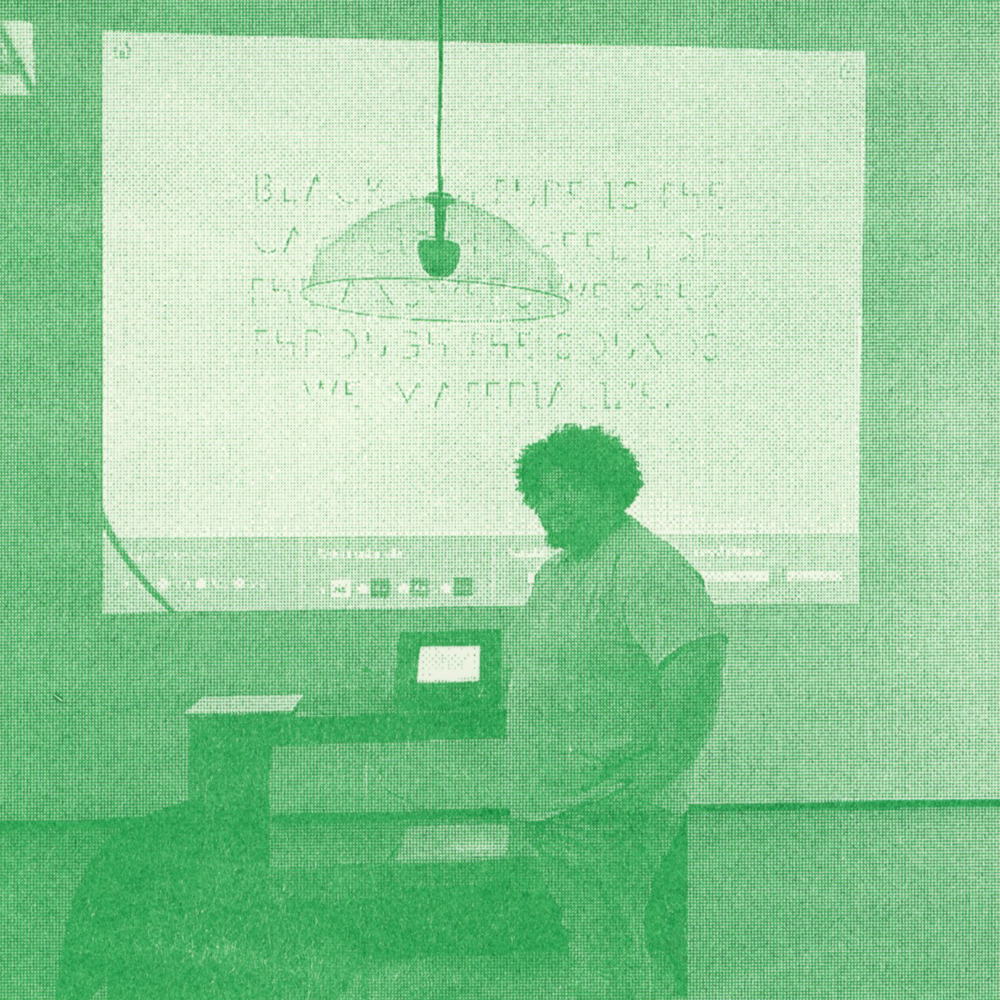
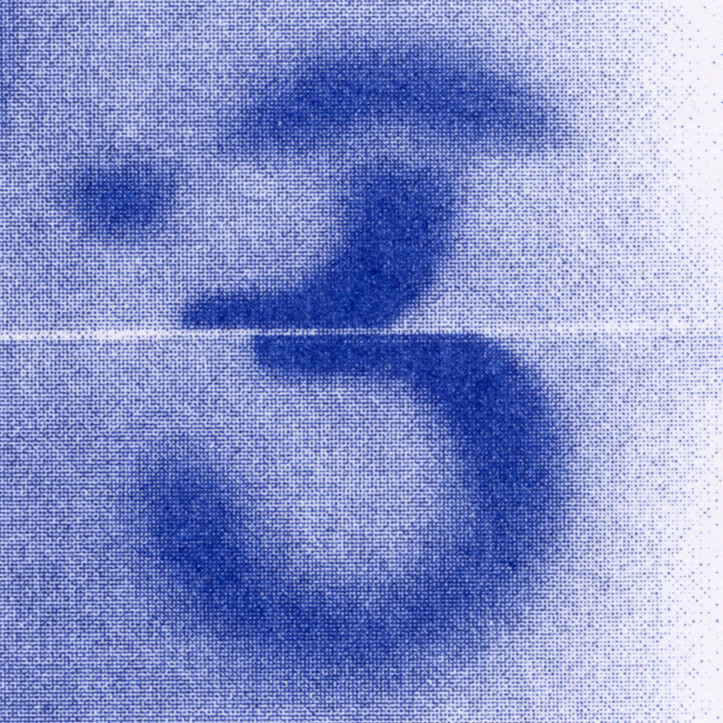
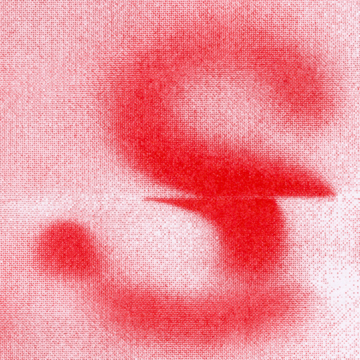
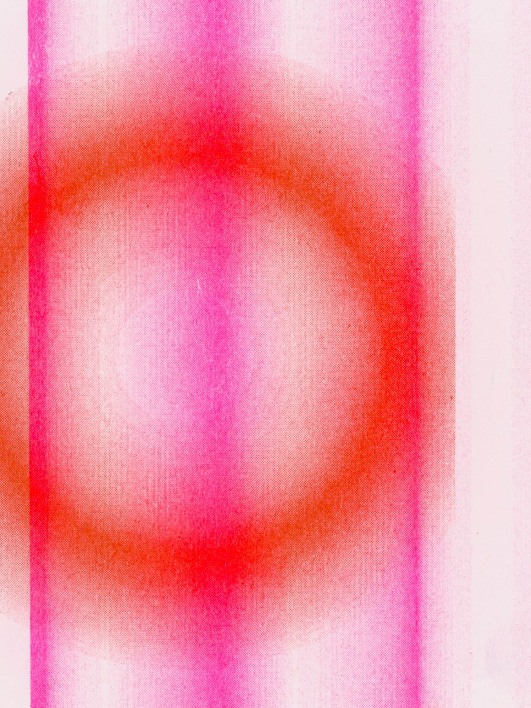
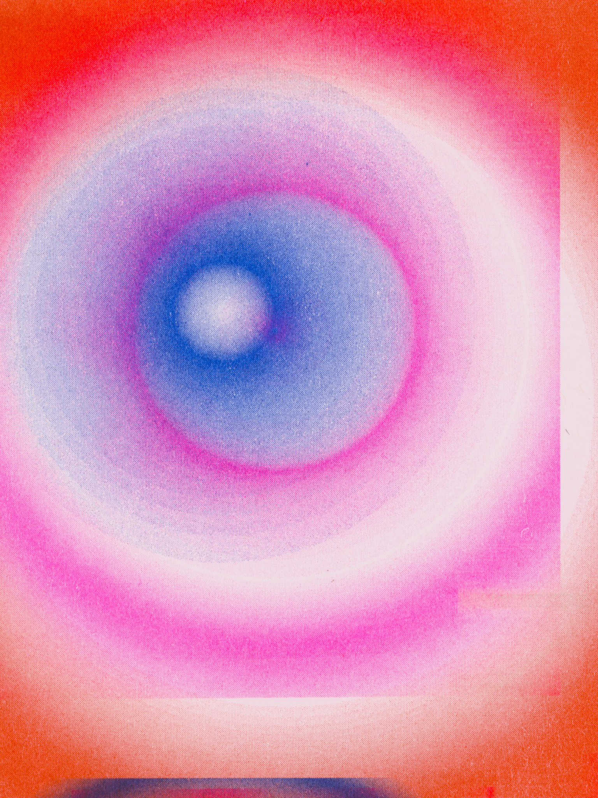

The Absence Between Us aims to evoke empathy and resonance in the audience by sharing personal human stories collected during forced isolation. Using footage from face-to-face, images, and the human voice The Absence Between Us highlights the universal themes that emerge from our stories, and the power of storytelling in fostering human connection.

ZIYAN CELIA CAI
MARIA CARDENAS
Maria Cardenas is a multidisciplinary designer studying the topic of folding. Through her thesis, she explores this theme between the spectrum of craft and design. Working in a process-oriented flow, integrating 2D and 3D methods in her practice. In this year-long study, Maria engaged in a range of material studies to create prints, patterns, books, and objects.

QINGYI CHANG
Discovering the invisible gender discrimination in the K-pop industry. Point out the double standards between male idols and female idols. Present and show the problems that exist through AR. Use photocards as AR targets, to overlay different layers like text, images and audio to show different problems that exist in the K-pop industry, to raise more awareness among fans.
DIYA CHEN
While fragrance and flavor are often associated with tea tasting, the sound of tea is equally important in tea culture. However, with the continuous development of modern industrialization, the traditional emphasis on tea sound has gradually faded. The Tea and Sound project aims to explore the vital relationship between tea and its sound in tea culture. By offering a unique experience that combines tea tasting and music appreciation, the project seeks to showcase the idea of ""sound and tea in one"" and raise awareness about the importance of tea sound in tea culture.
While fragrance and flavor are often associated with tea tasting, the sound of tea is equally important in tea culture. However, with the continuous development of modern industrialization, the traditional emphasis on tea sound has gradually faded. The Tea and Sound project aims to explore the vital relationship between tea and its sound in tea culture. By offering a unique experience that combines tea tasting and music appreciation, the project seeks to showcase the idea of ""sound and tea in one"" and raise awareness about the importance of tea sound in tea culture.
SPRING FANG
The installation delves into the idea of negative space, specifically the inaccessible areas within a structure, through the perspective of an armoire. By incorporating nontraditional materials and unconventional forms, this piece redirects our attention from the contents of the armoire to the structure itself. With its imposing size, the installation magnifies the interplay between transparency, intimacy, and accessibility, enabling viewers to experience it firsthand.
The installation delves into the idea of negative space, specifically the inaccessible areas within a structure, through the perspective of an armoire. By incorporating nontraditional materials and unconventional forms, this piece redirects our attention from the contents of the armoire to the structure itself. With its imposing size, the installation magnifies the interplay between transparency, intimacy, and accessibility, enabling viewers to experience it firsthand.

JORDAN FITZGERALD
JORDAN FITZGERALD
RUISEN HE
SYNERGY is an interactive installation that combines the power of human gestures with the emotional impact of music. Designed for up to three participants, this immersive experience encourages collaboration, friendship, and interaction among users, transforming simple hand movements into a rich and ethereal musical landscape.
SYNERGY is an interactive installation that combines the power of human gestures with the emotional impact of music. Designed for up to three participants, this immersive experience encourages collaboration, friendship, and interaction among users, transforming simple hand movements into a rich and ethereal musical landscape.

HUA HSIANG
People are incredibly diverse and complex beings.I aim to explore the concept of self identity through design of human computer interaction. My goal is to translate the multi-faceted nature of self identity into a visual language that can be observed and shared between people. By visualizing the collected data, individuals will have a touchstone that draws them back to the learning from that moment, as well as an object that can open conversations with others about their process, thereby expanding the benefits of this area of self knowledge.
People are incredibly diverse and complex beings.I aim to explore the concept of self identity through design of human computer interaction. My goal is to translate the multi-faceted nature of self identity into a visual language that can be observed and shared between people. By visualizing the collected data, individuals will have a touchstone that draws them back to the learning from that moment, as well as an object that can open conversations with others about their process, thereby expanding the benefits of this area of self knowledge.
STUDENT INDEX
Ziyan Celia Cai
Maria Cardenas
Qingyi Chang
Diya Chen
Spring Fang
Jordan Fitzgerald
Ruisen He
Hua Hsiang
SHANE HUANG
JINYAO JIAN
With the rise of computers, many modern careers are done mainly sitting in front of the desks, such as academia, technology, design, finance and other industries. Once people are immersed in work, it is commonly easy to be sedentary. Ideally, getting up and taking regular breaks is good for one's health and productivity; however, in reality, strictly scheduled breaks can rudely interrupt work and create a cognitive burden of re-entry. Therefore, this thesis aims to investigate what is a practically healthy work-rest pattern, how to help workers implement it in reality, and proposes a watch-based app as solution featuring a flower clock that encourages and record a healthy work-rest pattern.
ZAHRA JAJARMIKHAYAT
I explored the phenomena of “re-presentation” through the lens of observing and interpreting the volcanic landscape as a simultaneously active and passive entity/monument. Utilizing generative tools and algorithmic logic, I constructed a visual essay consisting of an encyclopedic archive of signs, symbols, alphabets, images, objects, cartographic maps and texts that combined, compose a sacred language. Language of the volcano, language of the elements and language of the most abstract natural landscape visible to the eye. The volcano generates images of birth followed by images of death, depicting the constant dance of creation and destruction inherent to volcanic activity.
TRACY LEEDS
Tracy explores concepts of uncertainty by creating generative design systems using motion, form, and type. These systems seek to remove decision-making from the process. She uses her ideas about uncertainty and those of others, relinquishing content authority. The work documents our collective experience during this moment in time, while offering the viewer an opportunity to find their own order in the seemingly haphazard. As designers can we leave it to chance? What becomes of our roles? The balance between agency and compliance reflects a core struggle in my work and the driving question that belies each of the projects that compose her thesis.

LAYLA LI
Virtual communication enables quick and easy interaction, allowing us to craft alternative personas online. However, the constraints and liberties of various media make it challenging to truly understand one another. This project utilizes AI and AR to provide a platform for audiences to reconsider their own identities and those of others in virtual spaces.


TAOYU LI
Sound is essential to the survival of marine life as they rely on it to communicate, navigate and mate. Invisibly destructive man-made noise from shipping disrupts ocean soundscapes and poses a deadly threat to marine life, including plants. Seagrass is a vital element in marine ecosystems, providing habitat, food, and nurseries. This life-giving plant acts as a filtering system for the water and a key climate ally for carbon removal. HereTheyAre uses seagrass to highlight the beauty of the marine soundscape and the instability brought by humans, inspiring a more harmonious relationship between humanity and our aquatic neighbors.
ZHILIN LI
SCS (SeCret Session) is an organization for people who believe in aliens. The people of this group try to think and communicate in alien ways, using existing technology and information. To better mimic the way extraterrestrials might live, they would use a new language system to communicate. SCS welcomes anyone interested in aliens to join us.


SHIJIA LUO
If identity is made as we respond to our environment, to what extent can we have a self-made identity, when so many of our experiences are mediated by the human-made that have built in assumptions about our identity? I have constructed the era of 2060, as the world steps into virtuality due to the unlivable conditions for human beings. A chip-inserted system that allows humans to store and upload their data makes the remote sharing experience come true. The vision sharing wearables enables remote visual sharing experience and generates industries and occupations for such.
STUDENT INDEX
Shane Huang
Jinyao Jian
Zahra Jajarmikhayat
Tracy Leeds
Layla Li
Taoyu Li
Zhilin Li
Shijia Luo
EXHIBITION
Reception:
Friday, May 12th
5-8pm
Address:
1111 8th St, San Francisco, CA 94107
SALEEM M'BOGE
My name is Saleem M’Boge. I’m a Gambian born multidisciplinary designer based in San Francisco. Although graphic design is my profession, I constantly find myself tethering the line between artist and designer. My interests are in this idea of hybridization, whether it's professionally (Art/design) or culturally. I am particularly interested in the unique historical assimilation of black and brown people but I enjoy connecting the dots beyond that, as I build this world around myself. Through my methodology I seek to create visual and literal languages that contribute a different perspective in the design pedagogy.
WENWEN NONG
The Absence Between Us aims to evoke empathy and resonance in the audience by sharing personal human stories collected during forced isolation. Using footage from face-to-face, images, and the human voice The Absence Between Us highlights the universal themes that emerge from our stories, and the power of storytelling in fostering human connection.
TONI OLUTOMIWA
A Playful Future. Using a combination of text, image, and video I am generating speculative scenarios portraying a near future of immersive, integrated, purposeful game-playing. In this future, Augmented Reality (AR) glasses are ubiquitous devices that enable gameplay. This project aims to dissolve the boundaries between play and the rest of our lives, with a focus on players 21-28 years old, challenging us to bring play throughout our entire lives. Rather than using games as an escape or an alternative to reality, I envision a merging of games and daily living.
JESSIE PENG
Sound is essential to the survival of marine life as they rely on it to communicate, navigate and mate. Invisibly destructive man-made noise from shipping disrupts ocean soundscapes and poses a deadly threat to marine life, including plants. Seagrass is a vital element in marine ecosystems, providing habitat, food, and nurseries. This life-giving plant acts as a filtering system for the water and a key climate ally for carbon removal. HereTheyAre uses seagrass to highlight the beauty of the marine soundscape and the instability brought by humans, inspiring a more harmonious relationship between humanity and our aquatic neighbors.
DEVAN PONCE
I propose craft as an ontological path generator, an awakening to consider nonhuman life as sentient beings. I am investigating objects that can be their own openings to ways of being by engagement. I'm looking to appreciate and animate the natural world using crafted objects and craft methodology.In testing crafts effectiveness in generating consciousness I've committed myself as a student to nature. I go back and forth between making objects informed by nature and formed by nature while leveraging craft practices and techniques to enhance engagement in and out of the landscape. I hope to utilize craft as a road map, to investigate other styles of being, seeing and feeling; so that we may value, honor and appreciate non-human beings, giving those life forces the chance to be seen as sentient beings.


BRENDEN BRAGASAM
G-tube Pump is focused on modernizing the g-tube process through the creation of a succinct, well thought out ecosystem that not only aids, but empowers individuals to live a strong daily life. Currently the g-tube process is archaic and forced people to feel burdened. Relying on someone to either be tube fed or to be next to a iv pole, theres a massive necessity for revamption. My project tackles the research and design portions, going as far as to (hopefully) work with places like whipsaw or camelbak for a notes on final execution.
MERHAN QUTUB
STUDENT INDEX
Saleem Mboge
Wenwen Nong
Toni Olutomiwa
Jessie Peng
Devan Ponce
Brenden Pragasam
Merhan Qutub
SPACING
Antithetical to what many might consider unwanted in a practice,
the designers reflected in CCA MFA Design embrace the potential
of interference. Combining arrays of disciplines, methods, and
theories, they continually push the boundaries of what design is.
Designers lean into the unknown made by interlacing unfamiliar frequencies of research and form-making.
The work encountered in this exhibition blurs the edges of definite
design practice and creates a space where interference not only becomes an
appreciated interaction, but a necessary element to the vocation.
Exhibition website for CCA MFA Design
Class of 2023. Made with Omar Mohammad from January-May 2023.
ATHARVA RAUT
The world of 3D animation is saturated with a vague photorealistic aesthetic that seems incredibly hard to break because of the nature of the software. To depict moments that are semi-personal, I am exploring a range of styles that combine analog and digital methods of making. I am experimenting with using materials like pastels and color pencils over a print of my digital animation to give it a personal quality.
ANDREW ROQUE
Andrew’s work explores time, memory, and reproduction through methodologies of saving and copying. In the midst of a new era of adulthood, his awareness of the impermanence of time has become his drive to extend the memory of someone or something by giving it a new context. The work presented touches on the nuances of what it means to save. It questions the saving object versus the saving subject, and formally inspects what gets added or lost in transition.
ATHENE RUIZ
What is our future of work? In mixing possible political, social, and economic changes that can affect how we will work, I am crafting a scenario in this fictional imagining of the world in 2050. Climate change has depleted our resources affecting our ability to create non-essential items, and automation has taken over most jobs leaving some humans with a desire for meaningful work. As a response, the US government creates the company FOUND to offer new job opportunities for human workers, making fun items from our abundance of e-waste and other scrap we have accumulated over the years.

ANJNI SHAH
The first sense we develop is touch. It connects us to our internal and external environments. My thesis is an exploration of my curiosity about how we perceive and interact with the world through our tactile senses. I stray away from the ocularcentric outlook of design and bring focus to designing for the tactile sense.

QIAN SHENG
Artificial water sounds offer therapeutic benefits for mental health and well-being in urban areas with limited access to natural aquatic elements. Dopamine release in response to water's visual and auditory stimuli is responsible for this positive effect. To create a soothing environment, I developed kinetic instruments that produce a harmonious water-based soundscape, providing comfort and tranquility to those without access to water features.

ROSIE SIMONSE
So I’ve made some chairs. Not chairs that you can sit in. I’m a graphic designer, and making anything in three dimensions always feels like some kind of magic trick. This magic has something to do with the strange conversation between two and three dimensional objects. Moving the platonic chair from my illustrator file into physical pieces that fit together in z-space gives me new notions of what a chair could mean. The point is, magic is fun, but I don’t trust it to support my weight. Even so, my thesis is about this magic, and chairs are my muse.
VIOLA (ZUOBIJIA) SUN
Viola is an Interaction Designer committed to leveraging speculative + system thinking to create opportunities that benefit all living species. Her thesis, HearTheyAre, explores underwater noise pollution from human activities, which invisibly disrupts ocean soundscapes and threats marine life. HearTheyAre uses the keystone of sealife, seagrass, as the representative of oceans' health and beauty. By creating a visible and audible scenario where seagrass’ lights and sounds change to people’s proximity, this sensory installation showcases the fragile balance of underwater life and instability brought by humans. It aims to inspire a harmonious relationship between humanity and our aquatic neighbors.
STUDENT INDEX
Atharva Raut
Andrew Roque
Athene Ruiz
Anjni Shah
Qian Sheng
Rosie Simonse
Viola Sun
COLOPHON
Type in Use:
Arial
Arial Rounded
PP Neue Machina
FK Raster Roman Grotesk
Tools:
Risograph, photography, HTML/CSS
ANJANA VAS

SAVITHRI VELAGA
Questions of legacy, appropriation/appreciation, and cultural design hierarchies are the central tenets of my thesis. These themes are part of a greater diasporic anxiety explored in my work, and are heavily informed by both my everyday life and generational family history. I’m working across mediums, with an emphasis on screen-printing and layering techniques.
VINCY WU
We’ve entered the era of big data, and the amount of our personal online data is increasing at accelerated rates. One of the more valuable pieces of data is our lived experiences, which are often encapsulated in pictures and videos. In reality, instead of consciously recalling these moments, our memories flood into our minds after responding to our surrounding environments. Each memory is personal, resonating with strong emotion.
Reminiscence uses a digital interface to replicate how memory naturally wanders in humans. Unlike traditional photo galleries, images are recommended similarly to how memories flood in response to our surrounding environment.

MICHELLE ZAMORA
I explore breath through diverse materials like video, cyanotype, rope, clay, and more. My creations include ceramics, prints, candles, and stop-motion. With a maker mindset I design and build tools that aid my process. This tactile approach to art-making mirrors the meditative quality of focused breathing.

XINYI ZENG
Kitschtopia envisions a planet with a silicon-based foundation for life, which is different from Earth's carbon-based life forms. All the inhabitants on this planet are silicon-based life forms. Through the use of kitsch design style, the project imagines the appearance, habits, and environment of silicon-based life forms, and classifies them based on their shapes. For instance, due to the properties of silicon, this planet is a high-temperature and high-pressure world, with all gases existing in liquid form, and these silicon-based life forms live within them. In addition to silicon-based animals, there are also silicon-based plants on this planet. Through the envisioning and presentation of a series of silicon-based life form models, this project presents an alternative perspective that is different from the familiar forms of life on Earth.
SHUHAN ZHAO
Using stop-motion animation as a medium to explore the multiple presentations of media, focusing on the relationship between design paper and motion media, the story is based on a part of childhood memories, divided into several parts, exploring the results of digital products being reflected in print.
YIZHOU ZHUANG
Yizhou exploring the future of space exploration through industrial design and storytelling, with a focus on incorporating historical and social contexts into my designs. I aim to raise questions and send messages to my audience, encouraging them to think critically and speculatively about the relationships between people, technology, and the universe. I hope to provide a vision of the potential future that will inspire deeper understanding of our history and future.
STUDENT INDEX
Savithri Valega
Anjana Vas
Vincy Wu
Michelle Zamora
Xinyi Zeng
Shuhan Zhao
Yizhou Zhuang
SPACING
Instagram
@mfadesigncca
CCA MFA Design
cca.edu/design/mfa-design